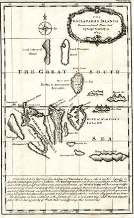

| Island | Human Population | Area | Altitude |
|---|---|---|---|
| Isabela | Approx. 1800 | 4670 km2 or 1803 mi2 | 1707 m or 5600 ft |
| Santa Cruz | Approx. 12,000 | 986 km2 or 381 mi2 | 864 m or 2835 ft |
| San Cristobal Island | Approx. 6000 | 557 km2 or 215 mi2 | 730 m or 2395 ft |
| Fernandina Island | 0 | 642 km2 or 248 mi2 | 1476 m or 4842 ft |
| Santiago Island | 0 | 572 km2 or 221 mi2 | 905 m or 2974 ft |
| Floreana Island | Approx. 100 | 173 km2 or 107 mi2 | 640 m or 2100 ft |
| Española Island | 0 | 60 km2 or 37 mi2 | 206 m or 675 ft |
| Marchena Island | 0 | 130 km2 or 50 mi2 | 343 m or 1125 ft |
| Santa Fé Island | 0 | 24 km2 or 9.3 mi2 | 259 m or 850 ft |
| Genovesa Island | 0 | 14 km2 or 5 mi2 | 64 m or 210 ft |
| Baltra | Ecuadorian Navy & Air Force | 21 km2 or 8 mi2 | 100 m or 328 ft |
| Pinzon | 0 | 18 km2 or 7 mi2 | 458 m or 1502 ft |
THE REGIONS
| GEOGRAPHY | |
|---|---|
| Location | Pacific Ocean |
| Coordinates | 0o 40′S 90o 33′W |
| Total islands | 21 |
| Major islands | 18 |
| Area | 7,880 km2 |
| Highest elevation | 7,880 km2 |
| Highest point | Volcán Wolf |
